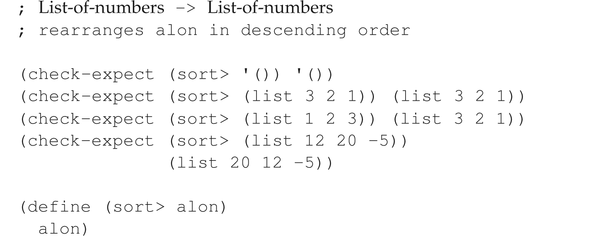
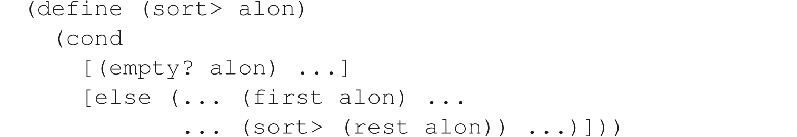
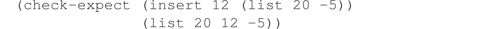
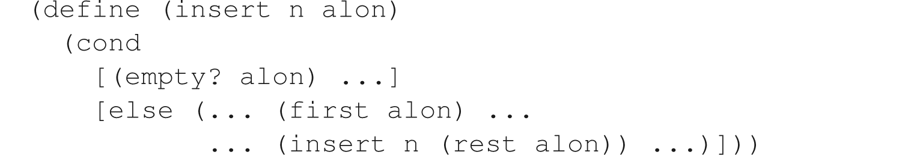
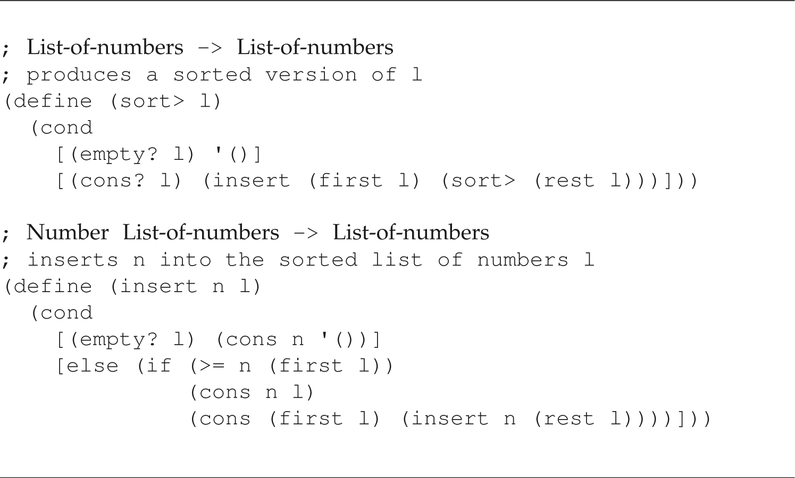

11.3 Auxiliary Functions that Recur
People need to sort things all the time, and so do programs. Investment advisors sort portfolios by the profit each holding generates. Game programs sort lists of players according to scores. And mail programs sort messages according to date or sender or some other criterion.
In general, you can sort a bunch of items if you can compare and order each pair of data items. Although not every kind of data comes with a comparison primitive, we all know one that does: numbers. Hence, we use a simplistic but highly representative sample problem in this section:
Sample Problem Design a function that sorts a list of reals.
The exercises below clarify how to adapt this function to other data.
Since the problem statement does not mention any other task and since sorting does not seem to suggest other tasks, we just follow the design recipe. Sorting means rearranging a bunch of numbers. This restatement implies a natural data definition for the inputs and outputs of the function and thus its signature. Given that we have a definition for List-of-numbers, the first step is easy:
; List-of-numbers -> List-of-numbers
; produces a sorted version of alon
(define (sort> alon)
alon)
Returning alon ensures that the result is appropriate as far as the function signature is concerned, but in general, the given list isn’t sorted and this result is wrong.
When it comes to making up examples, it quickly becomes clear that the problem statement is quite imprecise. As before, we use the data definition of List-of-numbers to organize the development of examples. Since the data definition consists of two clauses, we need two examples. Clearly, when sort> is applied to '(), the result must be '(). The question is what the result for
(cons 12 (cons 20 (cons -5 '())))
should be. The list isn’t sorted, but there are two ways to sort it:
• (cons 20 (cons 12 (cons -5 '()))), that is, a list with the numbers arranged in descending order; and
• (cons -5 (cons 12 (cons 20 '()))), that is, a list with the numbers arranged in ascending order.
In a real-world situation, you would now have to ask the person who posed the problem for clarification. Here we go for the descending alternative; designing the ascending alternative doesn’t pose any different obstacles.
The decision calls for a revision of the header material:

The header material now includes the examples reformulated as unit tests and using list. If the latter makes you uncomfortable, reformulate the test with cons to exercise translating back and forth. As for the additional two examples, they demand that sort> works on lists already sorted in ascending and descending order.
Next we must translate the data definition into a function template. We have dealt with lists of numbers before, so this step is easy:

Using this template, we can finally turn to the interesting part of the program development. We consider each case of the cond expression separately, starting with the simple case. If sort>’s input is '(), the answer is '(), as specified by the example. If sort>’s input is a consed list, the template suggests two expressions that might help:
• (first alon) extracts the first number from the input; and
• (sort> (rest alon)) rearranges (rest alon) in descending order, according to the purpose statement of the function.
To clarify these abstract answers, let’s use the second example to explain these pieces in detail. When sort> consumes (list 12 20 -5),
1. (first alon) is 12,
2. (rest alon) is (list 20 -5), and
3. (sort> (rest alon)) produces (list 20 -5) because this list is already sorted.
To produce the desired answer, sort> must insert 12 between the two numbers of the last list. More generally, we must find an expression that inserts (first alon) in its proper place into the result of (sort> (rest alon)). If we can do so, sorting is an easily solved problem.
Inserting a number into a sorted list clearly isn’t a simple task. It demands searching through the sorted list to find the proper place of the item. Searching through any list demands an auxiliary function because lists are of arbitrary size and, by item 3 of the preceding section, processing values of arbitrary size calls for the design of an auxiliary function.
So here is the new wish-list entry:
; Number List-of-numbers -> List-of-numbers
; inserts n into the sorted list of numbers alon
(define (insert n alon) alon)
That is, insert consumes a number and a list sorted in descending order and produces a sorted list by inserting the former into the latter.
With insert, it is easy to complete the definition of sort>:
(define (sort> alon)
(cond
[(empty? alon) '()]
[else
(insert (first alon) (sort> (rest alon)))]))
In order to produce the final result, sort> extracts the first item of a non-empty list, computes the sorted version of the rest, and uses insert to produce the completely sorted list from the two pieces.
Stop! Test the program as is. Some test cases pass, and some fail. That’s progress. The next step in its design is the creation of functional examples. Since the first input of insert is any number, we use 5 and use the data definition for List-of-numbers to make up examples for the second input.
First we consider what insert should produce when given a number and '(). According to insert’s purpose statement, the output must be a list, it must contain all numbers from the second input, and it must contain the first argument. This suggests the following:
(check-expect (insert 5 '()) (list 5))
Second, we use a non-empty list of just one item:
(check-expect (insert 5 (list 6)) (list 6 5))
(check-expect (insert 5 (list 4)) (list 5 4))
The reasoning of why these are the expected results is just like before. For one, the result must contain all numbers from the second list and the extra number. For two, the result must be sorted.
Finally, let’s create an example with a list that contains more than one item. Indeed, we can derive such an example from the examples for sort> and especially from our analysis of the second cond clause. From there, we know that sort> works only if 12 is inserted into (list 20 -5) at its proper place:

That is, insert is given a second list and it is sorted in descending order.
Note what the development of examples teaches us. The insert function has to find the first number that is smaller than the given n. When there is no such number, the function eventually reaches the end of the list and it must add n to the end. Now, before we move on to the template, you should work out some additional examples. To do so, you may wish to use the supplementary examples for sort>.
In contrast to sort>, the function insert consumes two inputs. Since we know that the first one is a number and atomic, we can focus on the second argument—the list of numbers—for the template development:

The only difference between this template and the one for sort> is that this one needs to take into account the additional argument n.
To fill the gaps in the template of insert, we again proceed on a case-by-case basis. The first case concerns the empty list. According to the first example, (list n) is the expression needed in the first cond clause because it constructs a sorted list from n and alon.
The second case is more complicated than the first, and so we follow the questions from figure 53:
1. (first alon) is the first number on alon;
2. (rest alon) is the rest of alon and, like alon, it is sorted in descending order; and
3. (insert n (rest alon)) produces a sorted list from n and the numbers on (rest alon).
The problem is how to combine these pieces of data to get the final answer.
Let’s work through some examples to make all this concrete:
(insert 7 (list 6 5 4))
Here n is 7 and larger than any of the numbers in the second input. We know so by just looking at the first item of the list. It is 6, but because the list is sorted all other numbers on the list are even smaller than 6. Hence it suffices if we just cons 7 onto (list 6 5 4).
In contrast, when the application is something like
(insert 0 (list 6 2 1 -1))
n must indeed be inserted into the rest of the list. More concretely, (first alon) is 6; (rest alon) is (list 2 1 -1); and (insert n (rest alon)) produces (list 2 1 0 -1) according to the purpose statement. By adding 6 back onto that last list, we get the desired answer for (insert 0 (list 6 2 1 -1)).
To get a complete function definition, we must generalize these examples. The case analysis suggests a nested conditional that determines whether n is larger than (or equal to) (first alon):
• If so, all the items in alon are smaller than n because alon is already sorted. The answer in that case is (cons n alon).
• If, however, n is smaller than (first alon), then the function has not yet found the proper place to insert n into alon. The first item of the result must be (first alon) and that n must be inserted into (rest alon). The final result in this case is
(cons (first alon) (insert n (rest alon)))
because this list contains n and all items of alon in sorted order—which is what we need.
The translation of this discussion into BSL+ calls for an if expression for such cases. The condition is (>= n (first alon)), and the expressions for the two branches have been formulated.
Figure 72 contains the complete sort program. Copy it into the definitions area of DrRacket, add the test cases back in, and test the program. All tests should pass now, and they should cover all expressions.

Figure 72: Sorting lists of numbers
Terminology This particular program for sorting is known as insertion sort in the programming literature. Later we will study alternative ways to sort lists, using an entirely different design strategy.
Exercise 186. Take a second look at intermezzo 1, the intermezzo that presents BSL and its ways of formulating tests. One of the latter is check-satisfied, which determines whether an expression satisfies a certain property. Use sorted>? from exercise 145 to reformulate the tests for sort> with check-satisfied.
Now consider this function definition:
; List-of-numbers -> List-of-numbers
; produces a sorted version of l
(define (sort>/bad l)
(list 9 8 7 6 5 4 3 2 1 0))
Can you formulate a test case that shows that sort>/bad is not a sorting function? Can you use check-satisfied to formulate this test case?
Notes (1) What may surprise you here is that we define a function to create a test. In the real world, this step is common, and, on occasion, you really need to design functions for tests—with their own tests and all. (2) Formulating tests with check-satisfied is occasionally easier than using check-expect (or other forms), and it is also a bit more general. When the predicate completely describes the relationship between all possible inputs and outputs of a function, computer scientists speak of a specification. Chapter 17.4 explains how to specify sort> completely. 
Exercise 187. Design a program that sorts lists of game players by score:
(define-struct gp [name score])
; A GamePlayer is a structure:
; (make-gp String Number)
; interpretation (make-gp p s) represents player p who
; scored a maximum of s points
Hint Formulate a function that compares two elements of GamePlayer.
Exercise 188. Design a program that sorts lists of emails by date:
(define-struct email [from date message])
; An Email Message is a structure:
; (make-email String Number String)
; interpretation (make-email f d m) represents text m
; sent by f, d seconds after the beginning of time
Also develop a program that sorts lists of email messages by name. To compare two strings alphabetically, use the string<? primitive.
Exercise 189. Here is the function search:
; Number List-of-numbers -> Boolean
(define (search n alon)
(cond
[(empty? alon) #false]
[else (or (= (first alon) n)
(search n (rest alon)))]))
It determines whether some number occurs in a list of numbers. The function may have to traverse the entire list to find out that the number of interest isn’t contained in the list.
Develop the function search-sorted, which determines whether a number occurs in a sorted list of numbers. The function must take advantage of the fact that the list is sorted.
Exercise 190. Design the prefixes function, which consumes a list of 1Strings and produces the list of all prefixes. A list p is a prefix of l if p and l are the same up through all items in p. For example, (list "a" "b" "c") is a prefix of itself and (list "a" "b" "c" "d").
Design the function suffixes, which consumes a list of 1Strings and produces all suffixes. A list s is a suffix of l if p and l are the same from the end, up through all items in s. For example, (list "b" "c" "d") is a suffix of itself and (list "a" "b" "c" "d").